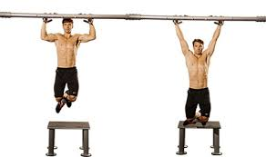

Cómo aprender a hacer dominadas con 6 ejercicios. | Foodspring Magazine
 Saltar al contenido Foodspring Magazine Recetas Workouts Artículos Adelgazar Musculación Estilo de vida saludable Body check Calculadora de IMC Calculadora de calorías Calculadora de macronutrientes Shop ShopMagazine / Musculación / Consejos musculación / Cómo aprender a hacer dominadas con 6 ejercicios.
Lee en 7 minCómo aprender a hacer dominadas con 6 ejercicios.
Publicado el abril 27, 2018 por Julia-Sarah Hennig Author Por: Julia-Sarah Hennig Redactora fitness Julia es entrenadora fitness. Ella se encarga de redactar nuestros artículos sobre fitness y nutrición. Además, diseña nuestros planes de entrenamiento gratuitos. Más información Por qué confiar en nosotros 40 shares Share Tweet Pin¿No logras hacer dominadas a pesar de estar en forma? Con nuestra rutina de entrenamiento para dominadas, podrás. Hoy te mostramos los 6 mejores ejercicios y consejos gracias a los cuales hombres y mujeres pueden dominar este ejercicio.
Las dominadas son el ejercicio con peso corporal por antonomasia para tonificar el torso. Es cierto que el postureo en la barra forma también parte de este entrenamiento, pero una dominada en condiciones es la base para mejorar tu forma física y para tener una espalda bonita.
Muchos deportistas, atletas de élite incluidos, tienen serias dificultades a la hora de intentar hacer dominadas. También es frecuente entre las mujeres el experiementar dificultades al aprender a hacer este ejercicio. La buena noticia es que esto no tiene por qué ser así. En este artículo te explicamos cómo hacer dominadas correctamente . Desde los ejercicios preparatorios hasta tu primera dominada . También te contaremos qué músculos deben trabajar a la hora de hacer este ejercicio y por qué a las mujeres les suele costar más hacerlas, aunque puedan llegar a dominarlas con ayuda del entrenamiento adecuado.
Índice
Principios básicos para aprender hacer dominadas Los mejores ejercicios para aprender a hacer dominadas Músculos utilizados en las dominadas ¿Cuál es la cantidad idónea de dominadas? Barras de dominadas. Encuentra la barra ideal. ConclusionesPrincipios básicos para aprender a hacer dominadas
Si quieres aprender a hacer dominadas, deberás seguir el mismo principio que para cualquier otro ejercicio: es necesario entrenar con regularidad si quieres obtener resultados. El hecho de no poder hacer este ejercicio en absoluto o tener un poco de idea es también determinante. Para aprender a hacer dominadas deberás tener en cuenta los 3 principios básicos siguientes.
Pero cuidado: si no sigues la alimentación adecuada , el mejor de los entrenamientos no te servirá para nada. Tus músculos necesitan proteína para fortalecerse. Poco importa que estés en plena operación bikini o que quieras desarrollar tu musculatura , necesitarás proteína si quieres lograr tus objetivos y nuestros shakes proteicos están al menos tan deliciosos como tus batidos favoritos. Déjate convencer.
Descubre la Proteína WheyRegularidad
Para aprender movimientos nuevos, es necesario que entrenes con regularidad: 3-4 veces por semana por ejemplo. El principio de las dominadas consiste en tirar del cuerpo hacia arriba. Los músculos no suelen estar sin embargo acostumbrados a este movimiento y aunque tu cabeza sepa lo que quieres hacer, tu musculatura no logra coordinarse para hacer este ejercicio. Por eso la disciplina es especialmente decisiva en este caso si quieres progresar.
Por ese motivo, los ejercicios de tracción deben formar parte de toda sesión de entrenamiento. No tienen por qué ser dominadas. El rowing, el tirón de polea arrodillado, las dominadas negativas o el remo en anillas te ayudan a fortalecerte y a mejorar tu coordinación para hacer dominadas. Sigue leyendo para ver cómo se hacen esos ejercicios.
¿Ya logras hacer un par de dominadas? ¿Necesitas quizá un poco de ayuda todavía? Haz entonces un par de repeticiones en cada entrenamiento para ir mejorando.
Progresión
¿Ya logras hacer dos tandas de 4 dominadas asistidas? ¡Perfecto! Entonces podrás empezar a prescindir del apoyo. Si quieres seguir fortaleciéndote, es importante que exijas cada vez más a tus músculos reduciendo paulatinamente el apoyo. En cuanto notes que no estás al límite de tus capacidades después de dos repeticiones de 4 dominadas, podrás reducir el apoyo cambiando de banda elástica.
Regeneración
Es importante que entrenes con regularidad y que te lleves al límite. Pero si realmente no puedes más, date un respiro hasta que vuelvas a sentirte en forma. Descansa 1, 2 o 3 días según tus necesidades. Entonces podrás ejercitarte a pleno rendimiento con la musculatura descansada. Tus músculos se reforzarán y tu coordinación mejorará entre las sesiones de entrenamiento.
Un aporte suficiente de zinc y magnesio es particularmente necesario para que tus músculos funcionen con normalidad. Solo cuando tus músculos reciban un aporte adecuado podrán explotar todo su potencial de rendimiento para que puedas darlo todo en el entrenamiento.
Más informaciónLos mejores ejercicios para aprender a hacer dominadas
La mejor manera de aprender a hacer dominadas consiste en ejercitar aquellos músculos que se esfuerzan cuando haces dominadas . Deberías centrarte para ello en los ejercicios de tracción . De ese modo irás fortaleciendo tu musculatura para poder tirar de tu peso corporal sin dejar de mejorar la coordinación necesaria para poder realizar el movimiento con fuerza suficiente hasta que puedas poner la barbilla a la altura de la barra. Con estos ejercicios podrás prepararte a la perfección para hacer tus primeras dominadas.
1. Mountain climber a ritmo lento
©foodspring Dificultad: baja media Tonifica: tronco, hombros, espalda, brazos, pecho Atención: Alza la rodilla hacia el pecho tanto como puedas. Separa los dedos, posiciona las manos a la altura de los hombros sin doblar los codos. Imagínate que quieras apoyar el talón de la pierna estirada en la pared. Variante fácil: Mantén la posición durante menos tiempo. Variante difícil: Mantén la posición durante más tiempo, alza más la rodilla.
2. Remo con barra
©foodspring Dificultad: media alta Tonifica: espalda, brazos Atención: Activa los músculos del tronco. Mantén los hombros firmes y la espalda recta (también la parte baja). Colócate repartiendo el peso en ambos pies por igual. Variante fácil: Reduce el peso. ¿Te pesa demasiado la mancuerna? Utiliza entonces una más ligera. Procura mover los brazos simultáneamente. Variante difícil: Aumenta el peso o utiliza kettlebells . En esta variante debes también mover los brazos simultáneamente.
3. Remo en anillas
©foodspring Dificultad: alta Tonifica: brazos, espalda, tronco Atención: Tensa el vientre y las piernas. Tu cuerpo debe estar tan recto como una tabla. Variante fácil: Retrocede un poco para no encontrarte justo debajo de las anillas y para que tu cuerpo no esté tan paralelo al suelo. Variante difícil: Avanza los pies. Pon el cuerpo paralelo al suelo, de modo que tus hombros se encuentren justo debajo de las anillas.
4. Elevaciones de rodillas colgado en barra
©foodspringDificultad: media Tonifica: brazos, tronco, espalda Arme, Core, Rücken Atención: Flexiona ligeramente los codos. Tira para ello levemente de tu cuerpo. Variante fácil: Alterna la piernas que eleves. Variante difícil: Eleva las rodillas al nivel de la cintura. Estira una pierna, mantén la posición. Repite el movimiento con la otra pierna. ¿Todavía es demasiado fácil? Mantén entonces ambas piernas estiradas tanto tiempo como puedas.
5. Tirón en polea arrodillado
©foodspringDificultad: media Tonifica: espalda, brazos Atención: Estira el cuello y mira hacia el frente. Estira bien el vientre y no arquees la espalda. Variante fácil: Usa una banda elástica más fina. Variante difícil: Usa una banda elástica más gruesa.
6. Dominadas asistidas
©foodspring Dificultad: alta Tonifica: espalda, brazos Atención: Utiliza un soporte que te permita hacer entre 2 tandas de 3-4 dominadas. Coloca la banda elástica a la altura de la mitad de la planta del pie o bajo la rodilla si tienes las piernas dobladas. Desciende lentamente después de cada dominada. Variante fácil: Usa una banda elástica más fuerte. Variante difícil: Usa una banda elástica menos fuerte.
Consejo: ¿te sigue costando coordinar tus movimientos? Prueba entonces a hacer dominadas negativas. En otras palabras: ponte de pie sobre una caja o taburete, agárrate a la barra y ve descendiendo lentamente.
Músculos utilizados en las dominadas
La intensidad con la que deben trabajar determinados músculos depende de la manera en que te agarres a la barra . Nos estamos sin embargo refiriendo en este caso a 5 músculos principales que serán ejercitados con una intensidad variable en función del tipo de dominada que realices.
Músculo dorsal ancho (Latissimus dorsi) verde Músculo trapecio (Musculus trapezius) amarillo Músculo romboides mayor (Rhomboideus) rojo Músculo redondo mayor (Teres Major) morado Músculos deltoides (Deltoideus) azul ©foodspringLos músculos de los brazos trabajan siempre también, sobre todo los de los antebrazos . En los dedos hay también músculos muy pequeños pero la fuerza con la que te mantienes en la barra proviene sobre todo de los antebrazos. La manera en la que te cuelgues de la barra determina el hecho de que ejercites los tríceps o los bíceps.
¿Cuál es la cantidad idónea de dominadas ?
Es una pregunta particularmente extendida entre las mujeres. No existe sin embargo una respuesta válida para todo el mundo. Una dominada es un buen comienzo. Una vez puedas hacer una, hacer 3-5 no te resultará complicado y será una buena cantidad. Es además suficiente para una forma física normal. Como a los hombres les suele costar menos hacer dominadas, hacer 10-15 dominadas completas es una buena cifra. Pero en ambos casos: cuantas más hagas, mejor.
¿Por qué les cuesta menos a los hombres hacer dominadas?
Las mujeres tienen por naturaleza una mayor proporción de grasa corporal y algo menos de masa muscular que los hombres. Esto implica que cuentan con menos musculatura para elevar más peso, lo que explica que les resulte más difícil. La buena noticia es que los músculos pueden ser fortalecidos y tonificados. La proporción de grasa y de masa corporal varía de una persona a otra , pero toda persona puede aprender a hacer dominadas. Así que ¡ponte a ello!
Barras de dominadas. Encuentra la barra ideal.
¿Quieres hacer dominadas, pero no tienes cómo? Difícil de creer. Los espacios de entrenamiento al aire libre, los árboles robustos o los parques infantiles suelen ofrecer posibilidades para hacer dominadas. Existen además diversos tipos de barras de dominadas que podrás emplear en casa. Las opciones más comunes son:
Barra de dominadas sin tornillos. Ventaja: no necesitas tornillos. Desventaja: inestable, puede estropear el marco de la puerta. Barra de dominadas multifuncional. Ventaja: estable. Desventaja: puede también estropear el marco de la puerta. Barra de dominadas para montaje en techo o pared. Ventaja: estable, no causa daños irreparables. Desventaja: necesita de paredes y techos robustos.Conclusiones
Las dominadas necesitan de mucha fuerza y coordinación. Los ejercicios de preparación física te ayudarán a hacer tus primeras dominadas. El entrenamiento regular es la clave del éxito. Las mujeres pueden también aprender a hacer dominadas sin problemas. Existen diferentes tipos de barras de dominadas para entrenar en casa. Tus músculos necesitan proteína para fortalecerse. Fuentes del artículo En foodspring nos servimos únicamente de fuentes contrastadas y de calidad a la hora de redactar nuestros artículos, así como de estudios avalados científicamente. Descubre nuestras líneas editoriales y conoce de qué forma contrastamos los datos para ofrecerte sólo los contenidos más fiables.Artículos relacionados
Burpees: consejos y variaciones efectivas para todos los niveles
Lee en 12 min Los burpees te llevan al límite más que ningún otro ejercicio de peso corporal. Ya tengas nivel principiante, avanzado o profesional, este ejercicio tan completo te pondrá a prueba y te ayudará a quemar grasa. Te contamos cuáles son los beneficios de los burpees y cómo realizarlos correctamente. Seguir leyendoPeso muerto rumano: beneficios y consejos para dominar la técnica de ejecución
Lee en 8 min El peso muerto rumano es un ejercicio imprescindible para todos los deportistas que quieran ir más allá. Con él se trabaja el músculo bíceps femoral, la zona lumbar y los glúteos con gran intensidad. Te contamos cuáles son las ventajas de esta variación del ejercicio clásico y cómo ejecutarla correctamente. Seguir leyendoDieta mini cut: una pérdida rápida de grasa
Lee en 7 min Si estás siguiendo nuestra Guía de Musculación, quizás ya estés en la etapa de desarrollo muscular. Entonces sabrás que, para que los músculos sean visibles, debes comer con un superávit de tus necesidades calóricas diarias durante un periodo de tiempo limitado. Durante este proceso también vas a ganar grasa corporal. Ahora se ha puesto de Seguir leyendoComentarios
Empresa Filosofía Tienda online Equipo editorial Servicio al cliente Descubre Recetas fitness Workouts Consejos Body check Social Instagram Facebook Youtube Pinterest© foodspring finest fitness food
Aviso legal Declaración privacidad 40 shares